"A Digital Education Platform for coastal Sustainability." SeaSense is an interactive learning platform designed
to help students, teachers, and ocean enthusiasts explore the wonders of the world’s coastlines.
With visually engaging content, quizzes, and real-life examples, SeaSense makes ocean learning meaningful.
Coastal waves & shoreline — habitat and processes
Tidepools — small ecosystems for learning
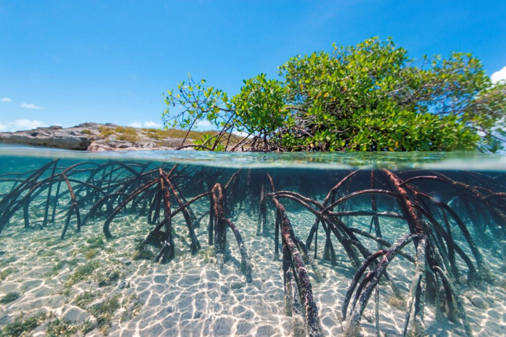
Mangroves — protect coasts and support biodiversity
Climate
🌤 Coastal Climate
Coastal climate refers to the weather patterns and atmospheric conditions found in areas close to the ocean or sea. These regions have unique climate features because of the constant interaction between land, water, and air. Coastal climates are generally mild, humid, and influenced by ocean currents, winds, and temperature changes.<
Coastal landscapes shaped by climate
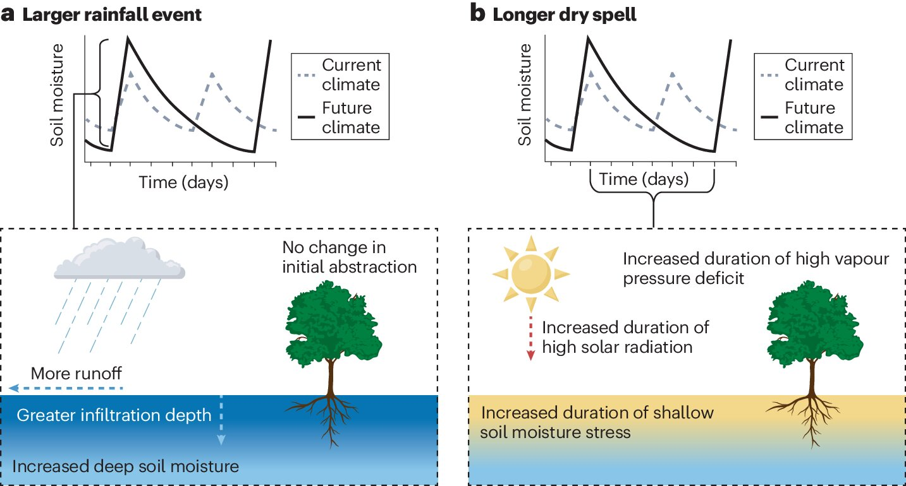
High humidity & rainfall patterns
Cyclones & storm surges
🌡 1. Characteristics of Coastal Climate
a) Moderate Temperatures
Coastal areas rarely experience extreme heat or cold
Water heats and cools slowly, which keeps temperatures stable
b) High Humidity
Coastal air contains a lot of moisture due to evaporation from the sea
This can make the atmosphere feel warm and sticky
c) Frequent Rainfall
Moist sea air rises and condenses, causing regular rainfall, especially during monsoons
d) Strong Winds
Sea breezes and land breezes create constant airflow, keeping the region windy
🌊 2. Factors Affecting Coastal Climate
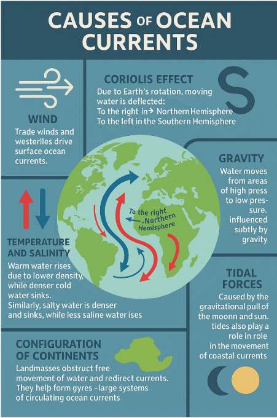
Ocean currents affect temperature
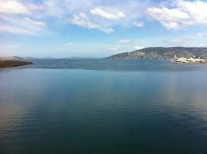
Wind direction & sea breezes
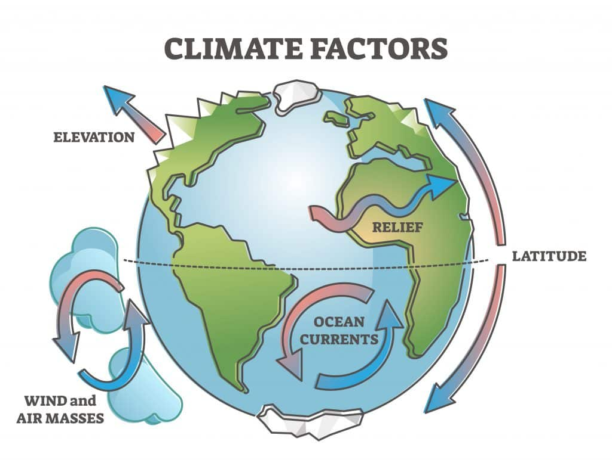
Latitude affects climate type
a) Ocean Currents
Warm currents (like Gulf Stream) raise temperature, while cold currents cool the coast
They influence rainfall, storm patterns, and humidity
b) Distance from the Sea
Areas closer to the coast have more humidity and stable temperatures
c) Wind Direction
Winds blowing from the ocean bring moisture; winds from land are usually dry
d) Latitude (Location on Earth)
Coasts near the equator are hot and wet, while those near the poles are cold and dry
🌬 3. Sea Breeze and Land Breeze
Sea breeze (Daytime) — cooler winds
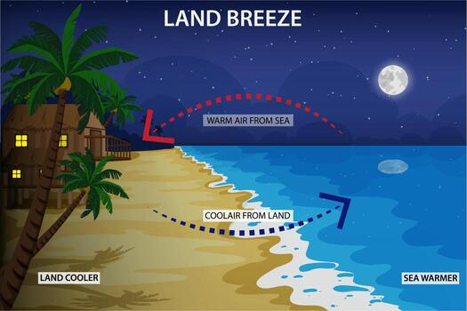
Land breeze (Nighttime) — comfortable
Sea Breeze (Daytime)
Land heats quickly, air rises
Cool ocean air moves to land
Creates cool and refreshing winds
Land Breeze (Nighttime)
Land cools faster than water
Cool air from land moves toward sea
Makes nights breezy and comfortable
🌧 4. Coastal Climate Types
Tropical — hot & humid
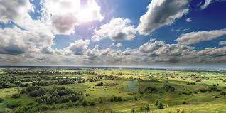
Temperate — mild seasons
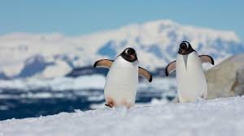
Cold polar — icy conditions
a) Tropical Coastal Climate
Hot and humid
Heavy rainfall
Found in India, Southeast Asia, Caribbean
b) Temperate Coastal Climate
Mild summers and winters
Moderate rainfall
Found in Europe, USA, Australia
c) Cold Coastal Climate
Low temperatures
Snowfall possible
Found near Arctic and Antarctic coasts
🌀 5. Weather Events Common in Coastal Areas
a) Cyclones & Hurricanes
Form over warm oceans; bring strong winds and heavy rainfall
b) Storm Surges
Sea levels rise during storms, causing coastal flooding
c) Tsunamis (Rare)
Caused by underwater earthquakes or volcanic eruptions
6. Impact of Coastal Climate on Life
a) Vegetation
Mangroves, palm trees and salt-tolerant plants grow well
b) Animals
Marine species like turtles, seabirds, crabs, dolphins thrive here
c) Human Life
Fishing, tourism, agriculture, and trade depend heavily on coastal climate conditions
🌍 7. Importance of Understanding Coastal Climate
1. Helps in Disaster Preparedness
Coastal regions are prone to cyclones, tsunamis, floods, and storm surges
Understanding coastal climate allows governments and communities to:
Predict weather changes
Issue early warnings
Reduce loss of life and property
2. Supports Sustainable Fishing and Marine Life Protection
The coastal climate affects ocean currents, water temperature, and marine biodiversity
Knowing these patterns helps:
Protect marine species
Maintain fish populations
Support local fishermen
3. Guides Coastal Agriculture
Humidity, rainfall, and soil conditions near the coast influence which crops grow best
Avoid crop loss due to storms or saltwater intrusion
4. Crucial for Urban Planning & Infrastructure
Buildings near the coast need protection against high winds, salt corrosion, and flooding
Knowledge of the climate helps engineers design stronger, safer structures
5. Important for Tourism Management
Tourism depends heavily on weather conditions
Understanding coastal climate helps:
Plan tourist seasons
Ensure safety during rough weather
Protect beaches and natural habitats from overuse
6. Supports Environmental Conservation
Coastal areas contain fragile ecosystems like mangroves, coral reefs, and estuaries
Knowing climate patterns helps in:
Conserving these ecosystems
Preventing erosion and habitat loss
Maintaining ecological balance
7. Improves Transportation & Navigation
Climate affects shipping routes, fishing activities, and port operations
Accurate climate knowledge ensures safe marine transportation
8. Helps Manage Coastal Erosion
Coastal erosion is a major issue caused by waves, sea-level rise, and storms
Understanding climate helps predict erosion patterns and plan:
Sea walls
Breakwaters
Mangrove planting
Beach nourishment
9. Supports Public Health and Safety
Humidity, salt content, and temperature variations affect human health
Understanding coastal climate helps:
Identify health risks
Plan healthcare services
Improve living conditions
🌊 8. Effects of Coastal Climate
Coastal climate has several important effects on the environment, living organisms, and human activities. Because coastal regions are influenced by the sea, the climate creates unique challenges and benefits.
🌧️ *. More Rainfall
Warm sea water increases evaporation, which leads to frequent and heavy rainfall.
Effect:
Supports agriculture
Increases chances of floods during monsoon
Dense vegetation grows easily
🌬️ *. Strong Coastal Winds
Sea breeze (day) and land breeze (night) constantly affect coastal areas.
Effect:
Cooler daytime temperatures
Helpful for wind energy production
Can sometimes cause damage during storms or cyclones
🌀 *. Cyclones & Storm Surges
Coasts are prone to cyclones, tsunamis, and storm surges.
Effect:
Loss of property and life
Coastal flooding
Damage to infrastructure, fishing boats, houses
🌱 *. Impact on Agriculture
Salt in air and soil affects the type of crops that can grow.
Effect:
Limited crop variety
Coconut, paddy, cashew, and banana grow better
Soil erosion due to winds and tides
🐠 *. Rich Biodiversity
Coastal climate supports diverse marine ecosystems like coral reefs, mangroves, and fish species.
Effect:
Boosts fishing industry
Supports tourism
Provides habitat for many marine animals
🏖️ *. Tourism Impacts
<
Coasts attract tourists due to pleasant climate and beaches.
Effect:
Boosts local economy
Creates jobs
Over-tourism can harm the environment
🧍 *. Human Health Impacts
Humidity and salt exposure affect people living near the coast.
Effect:
Higher risk of skin infections
Respiratory issues for some
Overall healthier air due to less pollution
🏚️ *. Erosion & Land Loss
Waves constantly hit the shoreline causing coastal erosion.
Effect:
Loss of land
Damage to houses near the shore
Need for building sea walls and breakwaters
---
🌱 9. Effects on the Environment:
a) Growth of Special Vegetation:
Coastal climates support mangroves, salt-tolerant plants, coconut trees, and coastal shrubs.
These plants help prevent soil erosion and protect the shoreline.
b) Increased Soil Salinity:
Saltwater carried by winds or floods makes coastal soil salty.
This can reduce agricultural productivity.
c) Coastal Erosion:
Strong waves, tides, and winds slowly wear away the coastline.
Beaches become smaller and habitats get destroyed.
d) Formation of Wetlands:
Constant moisture creates swamps, lagoons, and estuaries that support rich biodiversity.
---
🐠 10. Effects on Marine and Land Life:
a) Rich Biodiversity:
Coastal climate supports fish, corals, crabs, turtles, seabirds, and marine mammals.
Warmer waters and nutrient flow help life flourish.
b) Migration Patterns:
Many species (fish, birds, whales) migrate depending on seasonal coastal winds and water temperature.
c) Coral Bleaching:
Warmer coastal temperatures can harm coral reefs, causing bleaching and loss of marine life.
d) Breeding and Nesting:
Sandy beaches provide nesting grounds for turtles and birds, influenced by climate and tides.
---
🏘 11. Effects on Human Settlements:
a) Flooding and Storm Damage:
Cyclones, storm surges, and heavy rains can damage homes, buildings, and crops.
b) Ideal for Tourism:
Moderate temperatures and beautiful beaches attract tourists year-round, boosting local economy.
c) Fishing Industry:
Fishing greatly depends on weather patterns, ocean currents, and water temperature.
Bad weather reduces fish catch and affects livelihoods.
d) Rising Sea Levels:
Climate change causes sea water to expand, leading to coastal flooding and land loss.
🌡 12. Effects on Weather and Atmosphere:
a) High Humidity:
Moist air makes the region feel warmer and sticky, affecting comfort and health.
b) Frequent Rainfall:
Regular rainfall keeps the region green but can cause waterlogging and erosion.
c) Temperature Moderation:
Coastal regions rarely face extreme heat or cold, providing a stable living environment.
---
🏞 13. Effects on Economy and Society:
a) Coastal Agriculture:
Crops like rice, coconut, and cashew grow well.
However, saltwater intrusion can damage fields.
b) Ports and Trade:
Stable climate and deep waters make coasts perfect for ports.
Coastal climate helps global shipping and trade.
c) Health Impacts:
High humidity can cause breathing issues, fungal infections, and dehydration.
---
🧭 14. Long-Term Effects (Climate Change Related)
a) Melting Glaciers → Sea Level Rise
Leads to submerging of low-lying areas.
b) Stronger and More Frequent Storms
Climate change is increasing the intensity of cyclones.
c) Loss of Coastal Biodiversity
Rising temperatures affect fish, coral reefs, and marine ecosystems.
Fishing & Sustainable Practices
🎣 Overview of Fishing
Fishing is one of the most important economic and food sources for over 3 billion people worldwide. However, unsustainable practices threaten marine ecosystems and biodiversity. Understanding sustainable fishing is critical for ocean conservation.
Traditional fishing methods — cultural heritage
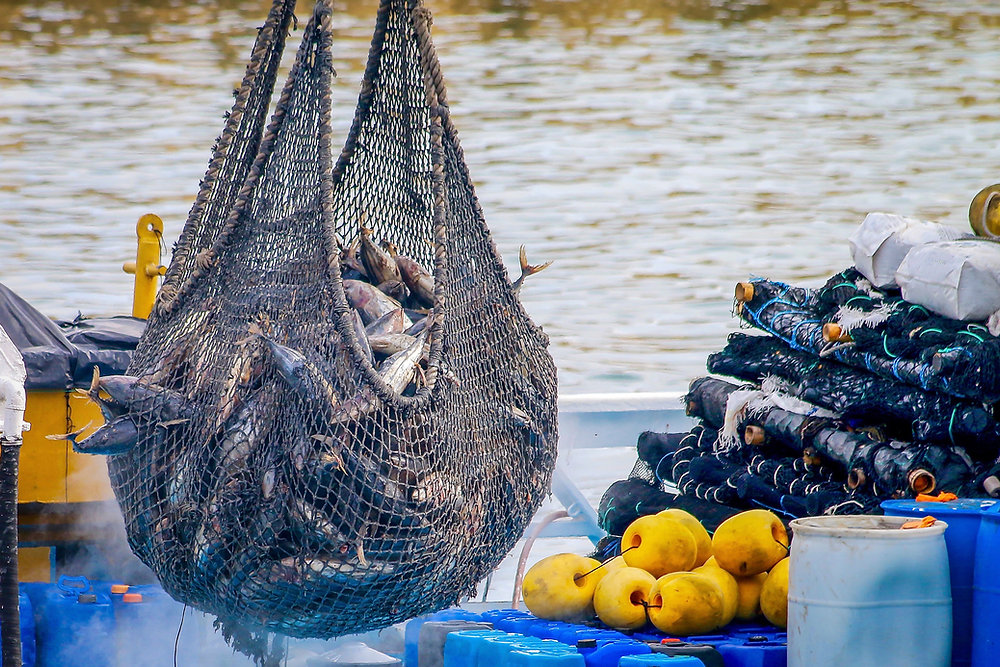
Commercial fishing nets — balance efficiency with responsibility
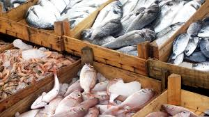
Fresh fish markets — connecting ocean to communities
🌊 1. Types of Fishing
Commercial Fishing
Large-scale operations using advanced equipment to catch fish for profit. Methods include:
Trawling: Dragging large nets along the ocean floor (can damage ecosystems)
Purse Seining: Surrounding schools of fish with large nets
Longlining: Using long lines with hundreds of hooks
Dredging: Mechanical harvesting of seafloor organisms
Artisanal Fishing
Small-scale, traditional fishing by local communities using sustainable methods. Benefits:
Minimal environmental impact
Supports local livelihoods and food security
Preserves cultural practices
Better quality of life for fishing communities
Recreational Fishing
Fishing for sport and leisure. Can help raise awareness but must follow regulations to prevent overfishing.
⚠️ 2. The Problem: Overfishing
What is Overfishing?
Removing fish from the ocean faster than they can reproduce, leading to population collapse and ecosystem damage.
Statistics:
Over 30% of global fish stocks are overfished
90% of large predatory fish have been removed from oceans
Bottom trawling destroys deep-sea habitats
Bycatch (unwanted catch) kills millions of marine species annually
Consequences of Overfishing:
Species Extinction: Cod, tuna, and shark populations are critically depleted
Food Insecurity: Fishing communities lose livelihoods and food sources
Ecosystem Collapse: Loss of key species disrupts food chains
Economic Loss: Global fishing industry worth $150+ billion faces collapse
Biodiversity Loss: Endangered species like sea turtles and dolphins caught as bycatch
✅ 3. Sustainable Fishing Practices
Catch Limits & Quotas
Governments set limits on how much fish can be caught to allow populations to recover.
Selective Fishing Methods
Hook-and-Line: Targets specific species, reduces bycatch
Pole-and-Line: Traditional method, very selective
Fish Traps: Allow small fish to escape
Marine Protected Areas (MPAs)
Designated zones where fishing is restricted or banned, allowing marine life to recover and breed.
Aquaculture (Fish Farming)
Breeding fish in controlled environments reduces pressure on wild populations, though it has environmental challenges.
Eco-Labeling & Certification
MSC (Marine Stewardship Council) certification ensures fish comes from sustainable sources. Look for the label when buying!
🐟 4. Important Fish Species & Their Status
Species
Status
Action Needed
Atlantic Cod
🔴 Critically Depleted
Fishing moratorium in some areas
Bluefin Tuna
🟡 Vulnerable
Strict catch limits
Sharks
🔴 Threatened
Ban on shark finning
Salmon
🟡 Declining
Habitat restoration, dam removal
🌍 5. Global Fishing Industry
Major Fishing Nations: China, Vietnam, Peru, Indonesia, Japan, and India lead in seafood production.
Employment: Over 60 million people work in fishing industries globally, many in developing nations.
Trade: Seafood is one of the most traded commodities worldwide, worth over $150 billion annually.
💡 6. How You Can Help
✅ Buy MSC-certified fish and seafood
✅ Reduce seafood consumption, especially endangered species
✅ Support artisanal and local fishing communities
✅ Avoid fish species like bluefin tuna, shark, and Atlantic cod when depleted
✅ Support marine conservation organizations
✅ Advocate for stronger fishing regulations and MPAs
✅ Choose sustainable aquaculture products when possible
🐠 9. Rare & Exotic Fish Species
The ocean is home to thousands of rare and exotic fish species that are rarely seen by humans. From the depths to remote coral reefs, these creatures display unique adaptations and stunning colors. Many are critically endangered.
🌟 Deep-Sea Rare Fish
🎣 Anglerfish (Melanocetus johnsonii)
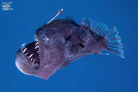
Depth: 6,500+ feet below surface
Feature: Bioluminescent lure on head to attract prey
Color: Black body with glowing appendages
Diet: Carnivorous — eats larger fish than itself
Status: Rare but not endangered
🦑 Barreleye Fish (Macropinna microstoma)
Depth: 2,000-3,000 feet
Feature: Transparent head with tubular eyes
Unique Trait: Eyes rotate upward to spot prey above
Size: Only 6 inches long
Discovery: First filmed in 2004 by MBARI
💎 Dumbo Octopus (Grimpoteuthis)
Depth: 9,800+ feet (deepest octopus species)
Feature: Ear-like fins resembling Disney's Dumbo
Body: Soft, jellyfish-like appearance
Diet: Sea cucumbers and marine snow
Adaptations: Extremely slow metabolism for deep ocean
🌈 Colorful & Exotic Fish
🌺 Mandarin Fish (Synchiropus splendidus)
Location: Indonesian coral reefs
Colors: Brilliant blue, orange, yellow & red patterns
Size: 3-4 inches — smallest fish
Rarity: Hard to breed in captivity
Conservation: Wild populations declining due to collection
⭐ Lionfish (Pterois)
Location: Indo-Pacific & Atlantic coral reefs
Appearance: Fan-like pectoral fins with striped patterns
Venom: Venomous spines for defense
Danger: Invasive species in Atlantic (threatens ecosystems)
Hunting: Uses fins to herd prey into corner
⚠️ Critically Endangered Fish
Species
Status
Threat
Smalltooth Sawfish
🔴 Critically Endangered
Overfishing, net entanglement
European Eel
🔴 Critically Endangered
Dam construction, pollution
Tequila Splitfin
🔴 Extinct in Wild
Habitat destruction
Devil's Hole Pupfish
🔴 Most Endangered
Lives in single cave only
🎯 Key Takeaway
Fishing is essential for global food security and livelihoods, but unsustainable practices threaten ocean ecosystems.
By choosing sustainable seafood, supporting marine protected areas, and making informed decisions, we can ensure fish populations thrive for future generations. Protecting rare and endangered fish species is equally critical for maintaining ocean biodiversity.
Coastal Foods & Seafood
🌊 Overview of Coastal Foods
The ocean provides food for over 3 billion people globally. Coastal regions are renowned for their unique and delicious seafood, which forms the backbone of many cultures and cuisines worldwide. From fish to shellfish to seaweed, coastal foods are nutritious, flavorful, and deeply connected to ocean health.
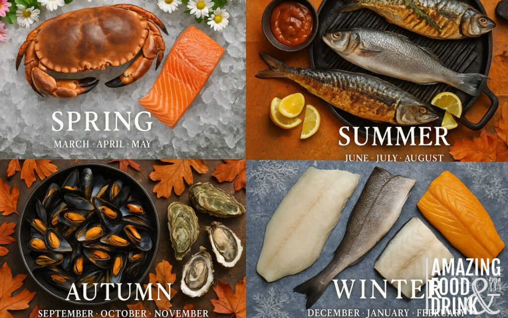
Fresh caught seafood — nutritious and delicious
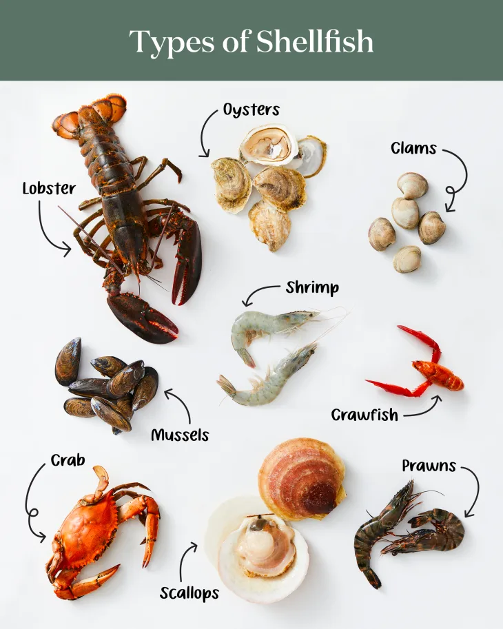
Shellfish — oysters, clams, shrimp & more
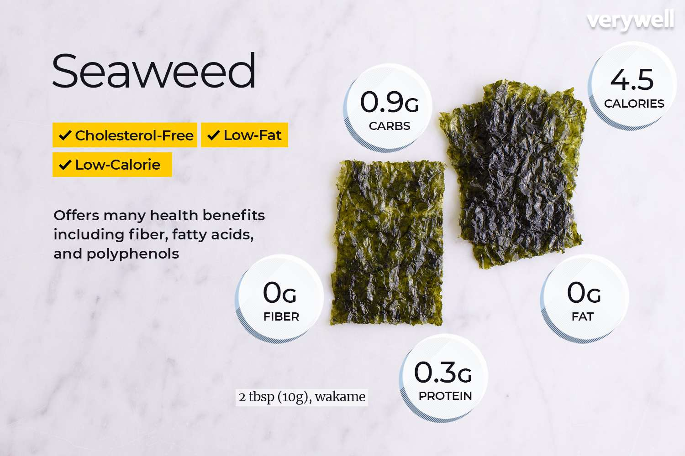
Seaweed — nutrient-rich ocean vegetables
🐟 1. Types of Coastal Foods
Fish
Fish are the primary protein source from the ocean. Common types include:
White Fish: Cod, Haddock, Flounder — mild flavor, flaky texture
Benefit: Rich in minerals, low in fat, great source of protein
Seaweed & Sea Vegetables
Nori: Used in sushi, rich in iodine and vitamins
Kelp: Used in Asian cuisine, highly nutritious
Dulse: Red seaweed with mineral-rich profile
Spirulina: Superfood packed with protein and antioxidants
Other Coastal Foods
Sea Urchin (Uni): Delicacy in Japanese and Mediterranean cuisines
Seagrass & Kelp: Used in salads, soups, and health supplements
Fish Roe (Caviar): Premium seafood delicacy
🌍 2. Famous Coastal Foods by Region
Region
Famous Dishes
Key Ingredients
Japan
Sushi, Sashimi, Miso soup, Tempura
Fish, Shrimp, Seaweed (Nori)
Mediterranean
Paella, Grilled Fish, Seafood Pasta
Fish, Squid, Mussels, Olive oil
Southeast Asia
Tom Yum, Fish Curries, Spring rolls
Shrimp, Fish, Seaweed
Scandinavia
Smoked Salmon, Fish Soup, Pickled Fish
Salmon, Cod, Herring
Latin America
Ceviche, Fish Tacos, Seafood Soups
Fish, Shrimp, Lime, Cilantro
West Africa
Jollof Rice with Fish, Fish Stew
Fish, Shrimp, Spices
⭐ 3. Most Famous Coastal Dishes Worldwide
🍣 Sushi (Japan)
Originated in Japan, sushi combines seasoned rice with fresh fish, seafood, and vegetables. It's now a global phenomenon enjoyed in restaurants worldwide. Sushi is not only delicious but also represents the art of seafood preparation.
🥘 Paella (Spain)
A traditional Spanish dish from Valencia featuring saffron-infused rice with seafood like shrimp, mussels, and fish. Paella is a celebration of coastal Mediterranean flavors and is often served at festivals and special occasions.
🍋 Ceviche (Peru & Latin America)
Fresh raw fish "cooked" in lime juice with onions, cilantro, and peppers. Ceviche showcases the freshness of coastal fish and is a staple in Peru, Ecuador, and other Latin American countries.
🦞 Lobster Rolls (USA - New England)
Fresh lobster meat mixed with mayo and served in a toasted bun. A classic American coastal dish that highlights the premium quality of lobster from the Atlantic Ocean.
🐟 Fish & Chips (UK & Ireland)
Crispy battered fish served with fried potatoes. A beloved comfort food that originated in coastal British towns and is now enjoyed globally.
🥘 Tom Yum (Thailand)
A spicy and tangy shrimp soup made with lemongrass, galangal, and lime. Tom Yum represents the rich seafood traditions of Southeast Asian coastal regions.
💪 4. Nutritional Benefits of Seafood
Omega-3 Fatty Acids: Reduce inflammation, support heart & brain health
High Protein: Essential for muscle growth and repair
Vitamins & Minerals: Rich in Vitamin D, Selenium, Iodine, and B vitamins
Low in Fat: Most seafood is lower in saturated fat than red meat
Sustainable Energy: Seafood provides lasting energy without excess calories
🌱 5. Sustainable Seafood Choices
To protect ocean health while enjoying coastal foods:
✅ Choose MSC-certified sustainable seafood
✅ Eat smaller, abundant fish species (sardines, mackerel, anchovies)
✅ Support local, artisanal fisheries
✅ Avoid endangered species (bluefin tuna, certain sharks)
✅ Try seaweed and kelp as sustainable protein alternatives
✅ Research fish farming practices before buying farmed seafood
🏥 6. Dietary Recommendations
How Much Seafood Should You Eat?
🐟 Adults: 2-3 servings per week (100-150g per serving)
👧 Children: 1-2 servings per week (smaller portions)
Grilling: Charred exterior, moist interior — popular in Mediterranean & Latin America
Steaming: Preserves delicate flavors — common in Asian cuisines
Baking: Gentle cooking method — retains nutrients
Frying: Creates crispy texture — traditional in British and American cuisine
Curing & Smoking: Preserves fish — Scandinavian tradition
Raw Preparation: Sushi, Ceviche — showcases fish freshness
🌍 8. Cultural Significance of Coastal Foods
Coastal foods are more than just nutrition — they're deeply woven into cultural identity:
Traditions: Family recipes passed down through generations
Festivals: Seafood festivals celebrate regional dishes and ocean heritage
Livelihoods: Fisheries support millions of jobs worldwide
Tourism: Coastal cuisine attracts food tourists and boosts local economies
Identity: Coastal communities define themselves through their seafood traditions
🎯 Key Takeaway
Coastal foods are a vital source of nutrition, culture, and livelihoods for billions of people. By choosing sustainable seafood, supporting local fisheries, and respecting ocean ecosystems, we can continue to enjoy the bounty of the sea while protecting it for future generations.
Biodiversity
Coastal zones are among the most productive and biologically diverse environments on Earth. They host a range of habitats—from mangroves and seagrass beds to coral reefs and estuaries—that support fish, birds, mammals, and countless invertebrates.
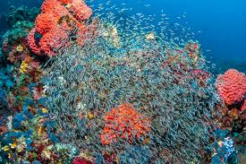
Coral reefs — biodiversity hotspots
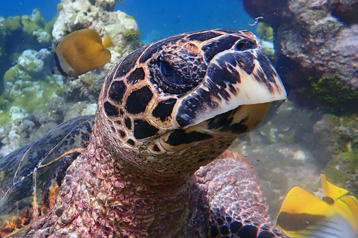
Sea turtles — migratory coastal species
Mangroves & estuaries — nurseries for juveniles
Key Coastal Habitats
Mangroves — protect shorelines, trap sediment, and provide nurseries for many fish and crustaceans.
Seagrass beds — important feeding grounds for dugongs, turtles and many juvenile fish.
Coral reefs — extremely diverse communities that support fisheries and tourism.
Estuaries — nutrient-rich mixing zones that support migratory birds and juvenile fish.
Rocky shores & tidal pools — home to specialized invertebrates and algae.
Species Highlights
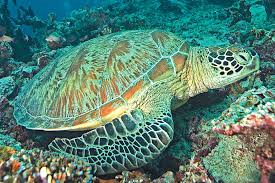
Green Sea Turtle
Long-distance migratory species that feed on seagrass and maintain healthy seagrass ecosystems. Threats: bycatch, coastal development, pollution.
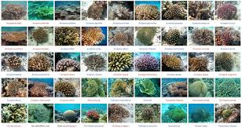
Coral Species
Corals build reefs that shelter thousands of species. Threats: warming oceans, acidification, and destructive fishing practices.
Mangrove Communities
Mangroves stabilize coasts and provide crucial nursery habitat for many commercially important fish. Threats: clearance for shrimp farms and coastal construction.
Threats & Conservation
Overfishing & bycatch — reduces population sizes and alters food webs.
Habitat loss — mangrove clearance, seagrass damage, and coral destruction.
Pollution — plastics, runoff and chemical contaminants harm wildlife.
International cooperation: migratory species and shared fisheries require cross-border agreements.
Further Resources
IUCN Red List, NOAA Marine Protected Areas, and major conservation NGOs provide guidance and project examples.
Look for local coastal restoration groups and volunteer programs to get involved.
Ocean Currents
Ocean currents are continuous, directed movements of seawater driven by wind, differences in water density, the Earth's rotation, and the shape of ocean basins. Currents operate at the surface and in the deep ocean, moving heat, nutrients, and organisms across vast distances.
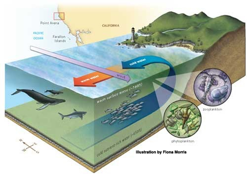
Surface currents shown from above
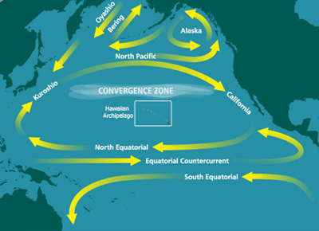
Warm western boundary current (e.g. Gulf Stream)
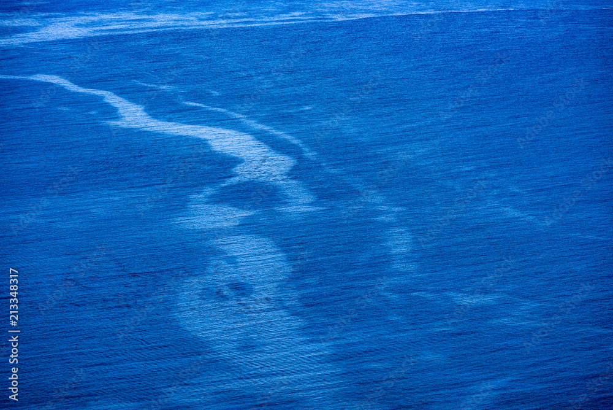
Coastal upwelling — nutrient-rich waters
Types of Currents
Surface currents — driven mainly by wind; influence climate and transport warm/cold water across oceans.
Deep (thermohaline) currents — driven by density differences from temperature and salinity; part of the global conveyor belt.
Coastal currents & upwelling — local currents produced by wind and coastline shape; upwelling brings nutrient-rich deep water to the surface.
What Drives Ocean Currents?
Wind stress: major driver of surface circulation (trade winds, westerlies).
Coriolis effect: due to Earth's rotation, it deflects moving water and shapes gyres.
Density gradients: temperature and salinity differences create sinking and rising motions (thermohaline circulation).
Coastlines & seafloor topography: redirect and intensify currents along continental margins.
Major Currents & Examples
Gulf Stream / North Atlantic Drift — warm current that moderates Western Europe's climate.
Kuroshio Current — western boundary current in the North Pacific (Japan's warm current).
Antarctic Circumpolar Current — the strongest current, encircling Antarctica and connecting ocean basins.
Peru (Humboldt) Current — a cold, nutrient-rich upwelling current that supports rich fisheries.
Why Currents Matter
Climate regulation: redistribute heat from equator to poles and influence weather patterns.
Nutrient transport: upwelling zones fuel productive fisheries and high biodiversity.
Migration pathways: many marine species use currents for long-distance movement.
Pollutant dispersal: currents carry plastics and contaminants across oceans.
Human Impacts & Monitoring
Climate change: alters current strength and patterns (e.g., melting polar ice affects thermohaline circulation).
Shipping & pollution: introduce contaminants that currents spread widely.
Learn more / Explore: Try tracking sea surface temperature maps and ARGO float data to see currents and water mass movements in real time.
The Global Conveyor Belt (Thermohaline Circulation)
How it works: Cold, salty water sinks at the poles (North Atlantic, around Antarctica) and flows slowly along the ocean floor toward the equator.
Deep currents: this deep water circulation takes ~1,000 years to complete a full cycle, carrying heat and nutrients globally.
Return path: warm surface currents (Gulf Stream, etc.) return water to the poles, completing the loop.
Climate importance: the conveyor redistributes vast amounts of heat; disruption could drastically cool Western Europe and affect global climate.
Ekman Spiral & Wind-Driven Motion
Ekman effect: wind pushes the ocean surface, but the Coriolis effect deflects that water to the right (Northern Hemisphere) or left (Southern Hemisphere).
Spiral pattern: each layer below deflects further, creating a "spiral" of motion; average motion is 90° to wind direction.
Ekman transport: the net effect moves water perpendicular to wind, explaining why coastal winds cause upwelling or downwelling.
Ocean Gyres
What are gyres? — Large circular current systems in each ocean basin, driven by trade winds and westerlies.
Subtropical gyres: found at ~30° latitude (North and South Atlantic, Pacific, Indian); rotate clockwise (Northern Hemisphere) or counterclockwise (Southern Hemisphere).
Subpolar gyres: found at high latitudes, rotate opposite to subtropical gyres.
Gyre centers: slowly sinking water creates low-productivity zones and accumulates floating debris (e.g., Great Pacific Garbage Patch).
Currents & Marine Ecosystems
Upwelling zones: cold, nutrient-rich currents (Peru, Benguela, California Currents) support some of world's richest fisheries.
Larval dispersal: ocean currents carry fish and coral larvae over vast distances, connecting distant populations.
Species migration: eels, turtles, and whales use currents as "ocean highways" for breeding migrations.
Thermal connectivity: warm currents allow tropical species to range farther poleward than latitude alone would predict.
Student Investigations & Activities
Drifter tracking: release biodegradable drifters or follow virtual drifter paths online to see where currents carry them.
Sea surface temperature mapping: collect satellite SST data and plot isotherms to identify warm/cold currents and upwelling zones.
Current velocity measurements: use HF radar data (where available) or analyze satellite altimetry to estimate current speeds.
Gyre modeling: create simple physical models (rotating tables, water tanks) to visualize how wind and rotation create gyres.
Climate impact analysis: research how thermohaline circulation changes affect European climate and regional fisheries.
Recommended resources: NOAA Ocean Surface Current Analysis (OSCA), COPERNICUS marine data, NASA PODAAC, and regional oceanographic institutes provide free real-time current data.
Coral Reefs
Coral reefs are underwater structures made by tiny animals called coral polyps. These polyps build hard skeletons that form the reef over many years. Reefs are home to thousands of species and act as natural breakwaters that protect coasts.
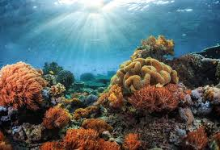
Coral reef close-up — many small animals build the reef
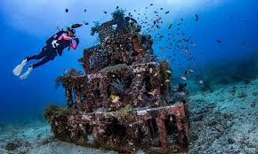
Divers exploring a healthy reef — great for learning and research
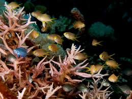
Shallow reef and lagoon — nursery habitats for young fish
Quick facts for students
What are corals? — Tiny animals (polyps) related to jellyfish that live in colonies and build hard skeletons.
How fast do reefs grow? — Some corals grow only a few millimetres to a few centimetres per year.
Why are reefs important? — They provide food, homes for fish, protect shorelines, and support tourism and fisheries.
Where do they live? — Mostly in warm, shallow, clear waters near the equator where sunlight reaches them.
Threats to Coral Reefs
Warming oceans: cause coral bleaching when corals lose the algae they need to survive.
Pollution & runoff: excess nutrients cause algae to overgrow and smother corals.
Overfishing & destructive fishing: remove key species and damage reef structure.
Physical damage: anchor drops, careless divers, and coastal development can break reefs.
Simple ways students can help
Learn and share: teach friends about reefs and why they matter.
Reduce pollution: avoid single-use plastics and dispose of trash properly.
Support sustainable seafood and responsible tourism: choose certified operators.
Join local beach clean-ups or reef-monitoring citizen science projects.
Coral Biology & Symbiosis
Polyps: individual coral animals (related to sea anemones) that live in colonies and secrete calcium carbonate skeletons.
Zooxanthellae: single-celled algae (symbionts) that live inside coral tissue and provide nutrients via photosynthesis in exchange for shelter.
Colony structure: thousands of polyps connected by living tissue, creating complex structures (branching, massive, plate-like) adapted to different water conditions.
Reproduction: corals reproduce both asexually (budding, fragmentation) and sexually (spawning synchronized by moon phase and temperature).
Reef Types & Diversity
Fringing reefs: grow directly along coastlines, providing immediate shore protection.
Barrier reefs: separated from shore by a lagoon, like the Great Barrier Reef.
Atoll reefs: circular formations enclosing a lagoon, common in the Pacific.
Coral species: hundreds of hard (scleractinian) and soft coral types support different ecological niches.
Coral Bleaching — What Happens?
How it works: When water temperature rises or other stressors occur, corals expel their symbiotic algae (zooxanthellae). Without the algae, corals turn white (hence "bleaching") and lose their main food source. If conditions improve, corals can recover; if stress persists, they die.
Temperature stress: even a 1–2°C rise above normal can trigger bleaching.
Other stressors: low salinity, pollution, excessive sunlight, and disease can compound temperature stress.
Recovery window: if conditions stabilize within weeks, many corals regain their algae; prolonged stress leads to death.
Restoration & Management
Coral nurseries: scientists grow coral fragments in tanks or underwater nurseries, then transplant them to damaged reefs.
No-take marine reserves: protecting fish populations maintains reef balance and resilience.
Research breeding: selecting heat-tolerant coral strains and studying symbiont diversity for future restoration.
Student Research & Monitoring Opportunities
Reef surveys: participate in dive surveys counting fish and assessing coral cover and health (bleaching index).
Temperature monitoring: set up underwater loggers to track daily temperature swings and identify thermal refugia (cooler spots).
Photo monitoring: photograph fixed reef locations regularly and compare over time to document recovery or decline.
Lab studies: measure coral respiration, photosynthesis, or test stress response of coral fragments in controlled conditions.
Helpful resources: NOAA Coral Reef Watch (satellite bleaching alerts), Coral Reef Alliance, and IUCN guidelines for reef restoration and monitoring.
Pollution
Coastal pollution comes from many sources — trash and plastics, runoff from land, sewage, oil spills and industrial chemicals. These pollutants harm wildlife, damage habitats, and affect human health and local economies.
Plastic litter on beaches — common and harmful
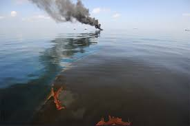
Oil contamination and sheens on water
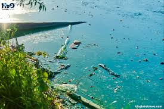
River runoff carrying pollutants to the coast
Common Sources
Plastic waste: bottles, bags, fishing gear and microplastics from degraded items.
Urban & agricultural runoff: fertilizers, pesticides and sediments that flow into rivers and coasts.
Sewage and untreated wastewater: carries pathogens and nutrients that cause algal blooms.
Oil spills & shipping: accidental or operational releases of oil and chemicals.
Impacts on Nature and People
Wildlife harm: ingestion and entanglement from plastics; toxic effects from chemicals.
Habitat degradation: smothering of reefs and seagrass beds, reduced water quality.
Fisheries & food safety: contaminated seafood and economic losses for fishers.
Human health: exposure to pathogens and toxic chemicals, and loss of safe recreation areas.
Microplastics — Tiny but Widespread
Microplastics are small plastic particles (<5mm) that come from broken-down larger plastics, synthetic fibers, and personal care products. They are eaten by plankton and move up the food chain, and are now found in water, sediments, and marine organisms worldwide.
Proper disposal: recycle where available and never dump waste into waterways.
Participate: join beach clean-ups and local monitoring programs.
Support policy: back bans on single-use plastics and improved wastewater treatment.
Learn & share: educate peers about sources and effects of coastal pollution.
Quick classroom activity: Collect and sort litter from a short beach or shoreline survey, count common items, and discuss local actions to reduce the top items found.
Notable Real-World Incidents
Deepwater Horizon (2010)
The largest offshore oil spill in U.S. history — millions of barrels of oil were released into the Gulf of Mexico. Impacts included massive wildlife mortality, long-term damage to fisheries and coastal habitats, and widespread economic loss for coastal communities.
Exxon Valdez (1989)
A tanker ran aground in Alaska and spilled tens of millions of gallons of crude oil, causing long-lasting harm to birds, mammals and fisheries. The accident led to stronger tanker safety regulations and spill response planning.
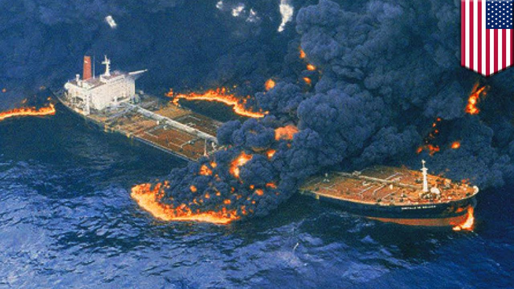
Great Pacific Garbage Patch
A large accumulation of floating plastic and debris in the North Pacific gyre. It illustrates how ocean currents concentrate plastics far from their sources and why upstream waste management is critical.
Control, Cleanup & Long-term Management
Immediate response: containment booms, skimmers and targeted cleanup reduce oil spread; trained teams evaluate risks before using chemical dispersants.
Waste management improvements: better collection, recycling, and bans on problematic single-use plastics reduce inputs to coasts.
Stormwater & agricultural controls: green infrastructure, retention ponds, buffer strips and improved fertilizer management reduce nutrient and sediment runoff.
Fishing gear recovery programs: retrieve abandoned, lost, or discarded fishing gear (ghost gear) to reduce entanglement and habitat damage.
Policy & international agreements: implement regulations (e.g., MARPOL, local laws), enforce penalties for illegal dumping, and fund monitoring and response capacity.
Community involvement: citizen monitoring, beach clean-ups, and local advocacy speed detection and reduce pollution inputs.
How governments & organizations measure success
Reduced counts of beach litter items per meter from repeated surveys
Improved water quality indicators (lower nutrient and bacterial counts)
Recovery of impacted species populations and reef/ seagrass health
Faster spill response times and better preparedness drills
Resources & further reading: NOAA Marine Debris Program, IUCN reports on marine pollution, and national environmental agencies provide case studies and guidance for managing coastal pollution.


.jpeg)
.jpeg)
.jpeg)